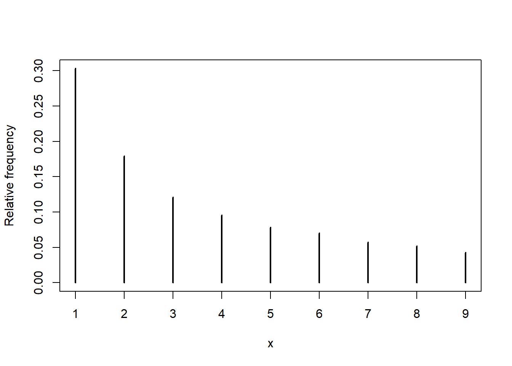
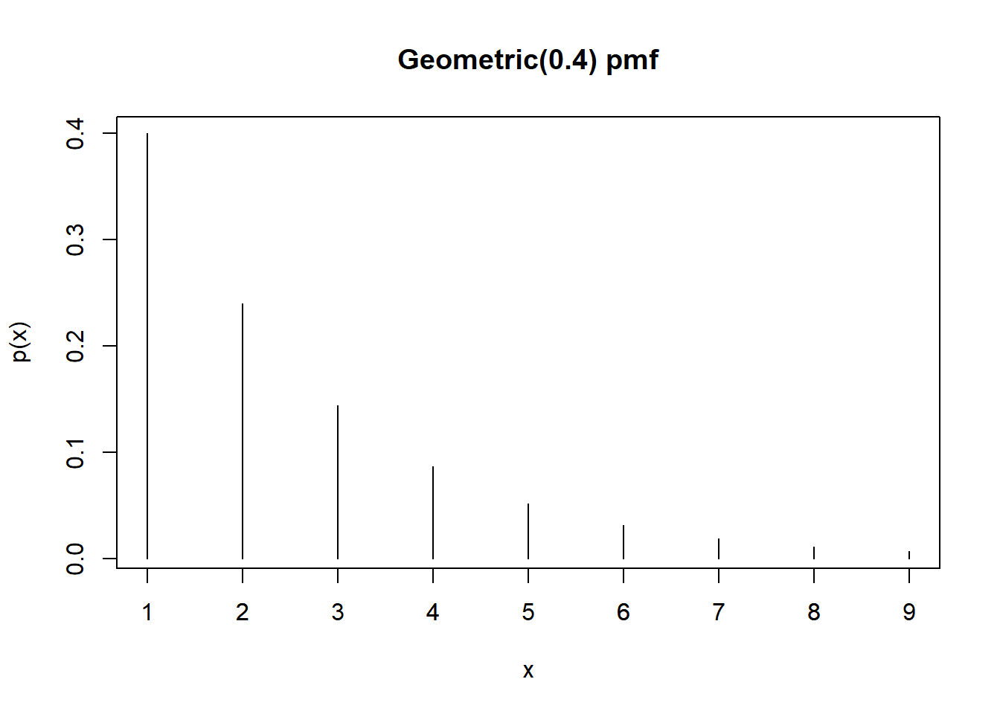
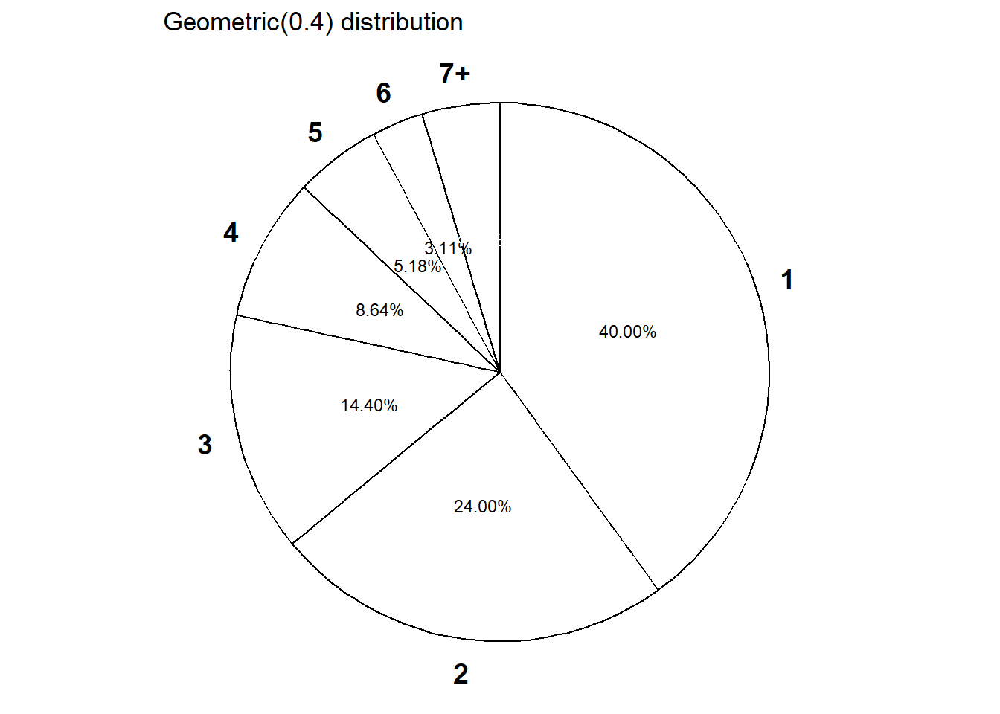

| best_player | prior | likelihood_A_beats_B | product | posterior |
|---|---|---|---|---|
| A | 0.50 | 0.6667 | 0.3333 | 0.6349 |
| B | 0.35 | 0.3333 | 0.1167 | 0.2222 |
| C | 0.15 | 0.5000 | 0.0750 | 0.1429 |
| Total | 1.00 | 1.5000 | 0.5250 | 1.0000 |
Homework 2 Solutions
Note: you can typically use software to compute probabilities for named distributions. But to get some practice with formulas, you should compute probabilities by hand for this assignment.
Problem 1
Consider three tennis players Arya (“A”), Brienne (“B”), and Cersei (“C”). One of these players is better than the other two, who are equally good/bad. When the best player plays either of the others, she has a 2/3 probability of winning the match. When the other two players play each other, each has a 1/2 probability of winning the match. But you do not know which player is the best. Based on watching the players warm up, you start with subjective probabilities of 0.5 that A is the best, 0.35 that B is the best, and 0.15 that C is the best. A and B will play the first match.
- Suppose that A beats B in the first match. Compute your posterior probability that each of A, B, C is best given that A beats B in the first match.
- Compare the posterior probabilities from the previous part to the prior probabilities. Explain how your probabilities changed, and why that makes sense.
- Coding required. Code and run a simulation to simulate (1) who is the best player according to your prior distribution, (2) who wins the first match given who is the best player; then use the results to approximate the probabilities from part a.
- Suppose instead that B beats A in the first match. Compute your posterior probability that each of A, B, C is best given that B beats A in the first match.
- Compare the posterior probabilities from the previous part to the prior probabilities. Explain how your probabilities changed, and why that makes sense.
- Now suppose again that A beats B in the first match, and also that A beats C in the second match. Compute your posterior probability that each of A, B, C is best given the results of the first two matches. (Hint: use as the prior your posterior probabilities from the previous part.) Explain how your probabilities changed, and why that makes sense.
Solution
- Hypotheses are which player is best (A, B, C). Evidence is that A beats B. The likelihood is the probability that A beats B given each of the best players.
- If A is best, probability A beats B is 2/3.
- If B is best, probability A beats B is 1/3.
- If C is best, probability A beats B is 1/2.
A’s probability of being the best increased, which makes sense because A won the match. B’s probability of being the best decreased considerably, which makes sense because B lost the match. C’s probability of being the best decreased slightly, despite C not being involved in the match.
Simulation below.
N_rep = 10000
# initialize a data.frame for storing results
best_winner = data.frame(best = character(),
winner = character())
for (i in 1:N_rep) {
best = sample(c("A", "B", "C"), size = 1, prob = c(0.5, 0.35, 0.15))
if (best == "A") {
winner = sample(c("A", "B"), size = 1, prob = c(2 / 3, 1 / 3))
} else if (best == "B"){
winner = sample(c("A", "B"), size = 1, prob = c(1 / 3, 2 / 3))
} else {
winner = sample(c("A", "B"), size = 1, prob = c(1 / 2, 1 / 2))}
best_winner[i, ] = c(best, winner)
}
# first few rows; each row is a (best player, first match winner) pair
head(best_winner) best winner
1 B B
2 C B
3 B B
4 C B
5 C A
6 C B# tabulate results with proportions
table(best_winner) / N_rep winner
best A B
A 0.3306 0.1695
B 0.1178 0.2300
C 0.0736 0.0785# Approximate P(A is best | A wins first match)
nrow(best_winner[(best_winner$best == "A") & (best_winner$winner == "A"), ]) / nrow(best_winner[best_winner$winner == "A", ])[1] 0.6333333# Approximate P(B is best | A wins first match)
nrow(best_winner[(best_winner$best == "B") & (best_winner$winner == "A"), ]) / nrow(best_winner[best_winner$winner == "A", ])[1] 0.2256705# Approximate P(C is best | A wins first match)
nrow(best_winner[(best_winner$best == "C") & (best_winner$winner == "A"), ]) / nrow(best_winner[best_winner$winner == "A", ])[1] 0.1409962- Hypotheses are which player is best (A, B, C). Evidence is that B beats A. The likelihood is the probability that B beats A given each of the best players.
- If A is best, probability B beats A is 1/3.
- If B is best, probability B beats A is 2/3.
- If C is best, probability B beats A is 1/2.
| best_player | prior | likelihood_B_beats_A | product | posterior |
|---|---|---|---|---|
| A | 0.50 | 0.3333 | 0.1667 | 0.3509 |
| B | 0.35 | 0.6667 | 0.2333 | 0.4912 |
| C | 0.15 | 0.5000 | 0.0750 | 0.1579 |
| Total | 1.00 | 1.5000 | 0.4750 | 1.0000 |
A’s probability of being the best decreased, which makes sense because A lost the match. B’s probability of being the best increased, which makes sense because B won the match. C’s probability of being the best changed slightly, despite C not being involved in the match.
The prior is the posterior from the first part. Evidence is that A beats C. The likelihood is the probability that A beats C given each of the best players.
- If A is best, probability A beats C is 2/3.
- If B is best, probability A beats C is 1/2.
- If C is best, probability A beats C is 1/3.
| best_player | prior | likelihood_A_beats_C | product | posterior |
|---|---|---|---|---|
| A | 0.6349 | 0.6667 | 0.4233 | 0.7273 |
| B | 0.2222 | 0.5000 | 0.1111 | 0.1909 |
| C | 0.1429 | 0.3333 | 0.0476 | 0.0818 |
| Total | 1.0000 | 1.5000 | 0.5820 | 1.0000 |
By winning both matches, A’s probability of being the best has increased considerably. By losing their only matches, B’s and C’s probabilities of being the best have decreased considerably.
Problem 2
Solve Example 4.3.
Solution
Problem 3
Consider a “best-of-5” series of games between two teams: games are played until one of the teams has won 3 games (requiring at most 5 games total). Suppose one team, team A, is better than the other, having a 0.55 probability of winning any particular game. Assume the results of the games are independent (and ignore advantage, etc). Let \(X\) represent the number of games played in the series. (Hint: It’s helpful to first construct a two-way table of probabilities with the number of games played and which team wins, and then use it to answer the following questions. It will also help to list some outcomes, like AABA (team A wins game 1, 2, and 4, and B wins game 3).)
- Compute the probability that team A wins the series in 3 games.
- Compute the probability that the series ends in 3 games.
- Compute the probability that team A wins the series.
- Are the events “team A wins the series” and “the series ends in 3 games” independent? Explain by comparing relevant probabilities.
- Let \(X\) represent the number of games played in the series. Find the distribution of \(X\).
Solution
It is helpful to construct a two-way table to answer the following questions.
x 3 4 5 Total A wins 0.553 = 0.166 3(0.553)(0.45) = 0.225 6(0.553)(0.45)2 = 0.202 0.593 A does not win 0.453 = 0.091 3(0.453)(0.55) = 0.150 6(0.453)(0.55)2 = 0.165 0.407 Total 0.258 0.375 0.368 1 There is only one outcome for which A wins in 3 games: AAA. There are three outcomes in which A wins in 4 games: AABA, ABAA, BAAA. (Not AAAB because then the series would be over in 3 games.) Since the games are independent, an outcome like AABA has probability \((0.55^3)(0.45)\), so the probability that A wins in 4 games is \(3(0.55^3)(0.45)\). There are six outcomes in which A wins in 5 games: AABBA, ABABA, BAABA, ABBAA, BABAA, BBAAA. (Not outcomes like AAABB or AABAB because then the series would be over in 3 or 4 games.) Since the games are independent, an outcome like AABBA has probability \((0.55^3)(0.45)^2\), so the probability that A wins in 5 games is \(6(0.55^3)(0.45)\). You can fill in the rest of the table similarly.
The probability that team A wins the series in 3 games is \(\text{P}(X=3, A) = 0.55^3=0.166\).
Either the stronger team wins 3 in a row or loses 3 in a row. The probability is \(0.55^3+(1-0.55)^3=0.2575\).
The probability that team A wins the series is the sum of first row: \(\text{P}(A) = 0.593\).
No. \(\text{P}(X=3, A) = 0.55^3=0.166 \neq 0.152 = (0.2575)(0.593) = \text{P}(X=3)\text{P}(A)\). Alternatively, \(\text{P}(X = 3 | A) = 0.166/0.593 = 0.2799 \neq 0.2575 = \text{P}(X = 3)\). Given that \(A\) wins the series the series it more likely to end in 3 games than when B wins the series.
Total row above. \(X\) can take values 3, 4, or 5. Consider first the ways in which the stronger team wins in 4 games: AABA, ABAA, BAAA. (For example AABA, means the stronger team wins game 1, 2, and 4, and the weaker team wins game 3). Each of these outcomes has probability \(0.55^3(0.45)\) so the probability that team A wins in 4 games in \(3(0.55)^3(0.45)\). Similarly, the probability that team B wins in 4 games is \(3(0.45)^3(0.55)\). So \[ \text{P}(X = 4) = 3(0.55)^3(0.45) + 3(0.45)^3(0.55) = 0.3750 \] You could find \(\text{P}(X=5)\) in a similar way, or just use the fact that the probabilities have to add up to 1. The distribution of \(X\) is given by the following table. \[\begin{align*} x & \qquad & & \qquad \text{P}(X = x)\\ 3 & \qquad & & \qquad 0.2575\\ 4 & \qquad & & \qquad 0.3750\\ 5 & \qquad & & \qquad 0.3675\\ \end{align*}\]
Problem 4
Randomly select a county in the U.S. Let \(X\) be the leading digit in the county’s population. For example, if the county’s population is 10,040,000 (Los Angeles County) then \(X=1\); if 3,170,000 (Orange County) then \(X=3\); if 283,000 (SLO County) then \(X=2\); if 30,600 (Lassen County) then \(X=3\). The possible values of \(X\) are \(1, 2, \ldots, 9\). You might think that \(X\) is equally likely to be any of its possible values. However, a more appropriate model is to assume that \(X\) has pmf
\[ p_X(x) = \begin{cases} \log_{10}(1+\frac{1}{x}), & x = 1, 2, \ldots, 9,\\ 0, & \text{otherwise} \end{cases} \]
This distribution is known as Benford’s law.
- Construct a table specifying the distribution of \(X\), and the corresponding spinner.
- Find \(\text{P}(X \ge 3)\)
- Coding required. Code and run a simulation and use the results to approximate the distribution of \(X\). (In R, there are built in functions to simulate Benford’s law, but I want you to use the
samplefunction. In R,logis natural log;log10is base-10 log.)
Solution
See Example 4.6 of my probability notes
possible_x = 1:9
p_x = log10(1 + 1 / possible_x)
x = sample(possible_x, size = 10000, prob = p_x, replace = TRUE)
plot(table(x) / 10000,
ylab = "Relative frequency")
Problem 5
Maya is a basketball player who makes 40% of her three point field goal attempts. Suppose that at the end of every practice session, she attempts three pointers until she makes one and then stops. Let \(X\) be the total number of shots she attempts in a practice session. Assume shot attempts are independent, each with probability of 0.4 of being successful.
- What are the possible values that \(X\) can take? Is \(X\) discrete or continuous?
- Explain why \(X\) does not have a Binomial distribution.
- Describe in detail how you could, in principle, conduct a simulation using physical objects (coins, cards, dice, etc) and how you would use the results to approximate the distribution of \(X\).
- Compute and interpret \(\text{P}(X=1)\).
- Compute and interpret \(\text{P}(X=2)\).
- Compute and interpret \(\text{P}(X=3)\).
- Find the probability mass function of \(X\). Be sure to specify the possible values.
- Construct a table, plot, and spinner corresponding to the distribution of \(X\).
- Compute \(\text{P}(X>5)\) without summing. (Hint: what needs to be true about the first 5 attempts for \(X > 5\)?)
Solution
\(X\) can take values 1, 2, 3, \(\ldots\). Even though it is unlikely that \(X\) is very large, there is no fixed upper bound. Even though \(X\) can take infinitely many values, \(X\) is a discrete random variables because it takes countably many possible values.
\(X\) does not have a Binomial distribution since the number of trials is not fixed.
Construct a spinner that lands on “success” with probability 0.4. Spin the spinner until it lands on success and then stop and count the number of spins. This is one repetition, resulting in one value of \(X\). Repeat many times to simulate many values of \(X\). Summarize the simulated values to approximate the distribution. For example, counts the number of repetitions resulting in \(X=1\) and divide by the total number of repetitions to approximate \(\text{P}(X=1)\).
\(X= 1\) only if she makes her first attempt, so \(\text{P}(X = 1) = 0.4\). If Maya does this every practice, then in about 40% of practices she will make her first three pointer on her first attempt.
\(X= 2\) only if she misses her first attempt and makes her second attempt, so since the attempts are independent \(\text{P}(X = 2) = (0.6)(0.4)=0.24\). If Maya does this every practice, then in about 24% of practices she will make her first three pointer on her second attempt.
In order for \(X\) to be 3, Maya must miss her first two attempts and make her third. Since the attempts are independent \(\text{P}(X=3)=(1-0.4)^2(0.4)=0.144\). If Maya does this every practice, then in about 14.4% of practices she will make her first three pointer on her third attempt.
In order for \(X\) to take value \(x\), the first success must occur on attempt \(x\), so the first \(x-1\) attempts must be failures.
\[ p_X(x) = (1-0.4)^{x-1}(0.4), \qquad x = 1, 2, 3, \ldots \]
See below. This distribution is called the Geometric distribution with parameter 0.4.
The key is to realize that Maya requires more than 5 attempts to obtain her first success if and only if the first 5 attempts are failures. Therefore,
\[ P(X > 5) = (1-0.4)^5 = 0.078 \]
| x | p(x) |
|---|---|
| 1 | 0.4000 |
| 2 | 0.2400 |
| 3 | 0.1440 |
| 4 | 0.0864 |
| 5 | 0.0518 |
| 6 | 0.0311 |
| 7 | 0.0187 |
| 8 | 0.0112 |
| 9 | 0.0067 |


Problem 6
Suppose the number of earthquakes per hour, for a certain range of magnitudes in a certain region, follows a Poisson distribution with parameter 0.7.
- Compute and interpret the probability that there is at least one earthquake of this size in the region in any given hour.
- Compute and interpret the probability that there are exactly 3 earthquakes of this size in the region in any given hour.
- Interpret the value 0.7 in context.
- Construct a table, plot, and spinner corresponding to a Poisson(0.7) distribution.
Solution
Let \(X\) be the number of earthquakes in the region in a randomly selected hour. The pmf is
\[ p_X(x) = e^{-0.7}\frac{0.7^x}{x!}, \quad x = 0, 1, 2, \ldots \]
- \(\text{P}(X\ge 1)=1-\text{P}(X=0) = 1 - e^{-0.7}\frac{0.7^0}{0!}=1-e^{-0.7}=1-0.497=0.503\). In about 50% of hour long intervals there is at least one quake.
- \(\text{P}(X=3)= e^{-0.7}\frac{0.7^3}{3!}=0.028\). In about 3% of hour long intervals there are exactly 3 quakes.
- Over many hour-long time intervals, there are 0.7 earthquakes per hour on average.
- See below for table and spinner
x = 0:5
mu = 0.7
px = dpois(x, mu)
df = data.frame(x, px)
df |>
kbl(col.names = c("x", "p(x)"),
digits = 4) |>
kable_styling()| x | p(x) |
|---|---|
| 0 | 0.4966 |
| 1 | 0.3476 |
| 2 | 0.1217 |
| 3 | 0.0284 |
| 4 | 0.0050 |
| 5 | 0.0007 |
plot(x, px, type = "h", xlab = "x", ylab = "p(x)", main = "Poisson(0.7) pmf")

Problem 7
Suppose that a total of 350 students at a college are taking a particular statistics course. The college offers five sections of the course, each taught by a different instructor. The class sizes are shown in the following table.
| Section | A | B | C | D | E |
| Number of students | 35 | 35 | 35 | 35 | 210 |
We are interested in: What is the average class size?
- Suppose we randomly select one of the 5 instructors. Let \(X\) be the class size for the selected instructor. Specify the distribution of \(X\). (A table is fine.)
- Compute and interpret \(\text{E}(X)\).
- Compute and interpret \(\text{P}(X = \text{E}(X))\).
- Suppose we randomly select one of the 350 students. Let \(Y\) be the class size for the selected student. Specify the distribution of \(Y\). (A table is fine.)
- Compute and interpret \(\text{E}(Y)\).
- Compute and interpret \(\text{P}(Y = \text{E}(Y))\).
- Comment on how these two expected values compare, and explain why they differ as they do. Which average would you say is more relevant?
Solution
- \(X\) takes the value 210 with probability 1/5 and 35 with probability 4/5.
- \(\text{E}(X) = 210(1/5) + 35(4/5)=70\) is the average number of students per class from the instructors’ perspective. If we randomly select an instructor, record the number of students in the instructor’s class, and repeat, the long run average number of students will be 70.
- \(\text{P}(X = \text{E}(X)) = \text{P}(X = 70) = 0\). No instructor has a class whose size is equal to the average class size (from the instructor’s perspective).
- \(Y\) takes the value 210 with probability 210/350 and 35 with probability 140/350.
- \(\text{E}(Y) = 210(210/350) + 35(140/350)=140\) is the average number of students per class from the students’ perspective. If we randomly select a student, record the number of students in the selected student’s class, and repeat, the long run average number of students will be 140.
- \(\text{P}(Y = \text{E}(Y)) = \text{P}(Y = 140) = 0\). No student is in a class whose size is equal to the average class size (from the students’ perspective).
- Colleges usually report average class size from the instructor/class perspective, which in this case would be 70 students. From the students’ perspective, the average class size is not even close to 70! In fact, it’s twice that size. Some students (140 of them, which is 40% of the total of 350 students) have the benefit of a small class size of 35. But most students (210 of them, which is 60% of the students) are stuck in a large class of 210 students. In other words, most students would be pretty seriously misled if they chose this college based on the advertised average class size of 35 students per class. From the students’ perspective, it seems that 140 is the more relevant average to report. However, neither average really adequately represents what is happening here: there is wide variability in class sizes between large and small.